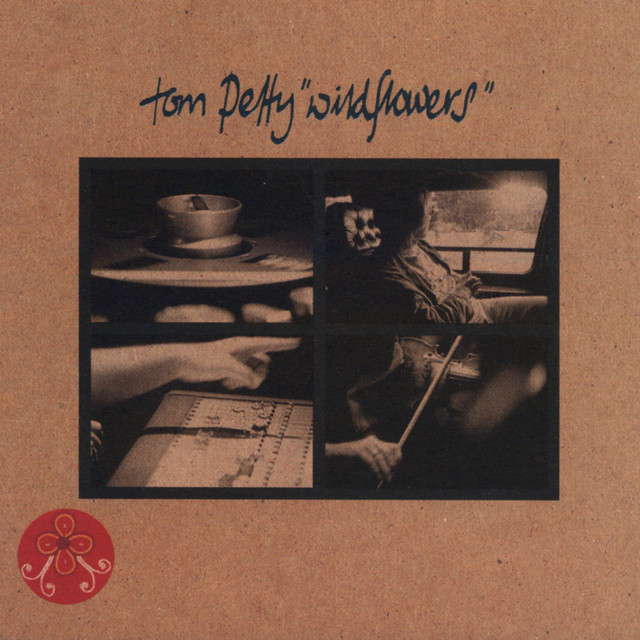

Tom Petty - Wildflowers



Información del álbum facilitada por discogs.com:
Fecha de lanzamiento: 1994
Géneros: Rock
Estilos: Rock & Roll, Classic Rock
Pais: US
Votos: Media de 4.17 con 6 votos
Sello: Omnium
Recorded At: Water Music (2)
Drums - Peter Irvine
Guitar - Tom King (4)
Producer - Dave Schramm
Recorded By - Jon Rosenberg
Vocals, Bass, Banjo - Tim Eriksen
Tracklist:
A1. Wildflowers (feat. Tom Petty & Mike Campbell & Michael Kamen & Steve Ferrone & Benmont Tench & Lenny Castro & George Drakoulias) 3:11
A2. You Don’t Know How It Feels (feat. Tom Petty & Steve Ferrone & Mike Campbell & Benmont Tench & Howie Epstein & Tom Petty & Lenny Castro) 4:49
A3. Time To Move On (feat. Mike Campbell & Michael Kamen & Steve Ferrone & Tom Petty & Benmont Tench) 3:15
A4. You Wreck Me (feat. Howie Epstein & Steve Ferrone & Mike Campbell & Tom Petty & Phil Jones (3) & Benmont Tench) 3:22
B1. It’s Good To Be King (feat. Mike Campbell & Michael Kamen & Steve Ferrone & Tom Petty & Howie Epstein & Tom Petty & Lenny Castro & Benmont Tench) 5:10
B2. Only A Broken Heart (feat. Mike Campbell & Steve Ferrone & Tom Petty & Benmont Tench) 4:30
B3. Honey Bee (feat. Carl Wilson & Howie Epstein & Steve Ferrone & Mike Campbell & Tom Petty & Lenny Castro & Benmont Tench) 4:58
B4. Don’t Fade On Me (feat. Mike Campbell & Tom Petty) 3:32
C1. Hard On Me (feat. Tom Petty & John Pierce & Steve Ferrone & Mike Campbell & Lenny Castro & Benmont Tench) 3:47
C2. Cabin Down Below (feat. Howie Epstein & Steve Ferrone & Mike Campbell & Tom Petty & Phil Jones (3) & Benmont Tench) 2:51
C3. To Find A Friend (feat. Tom Petty & Ringo Starr & Mike Campbell & Lenny Castro & Benmont Tench) 3:23
C4. A Higher Place (feat. Tom Petty & Steve Ferrone & Mike Campbell & Lenny Castro & Benmont Tench) 3:56
D1. House In The Woods (feat. Mike Campbell & Steve Ferrone & Tom Petty & Howie Epstein & Benmont Tench & Brandon Fields & Gary Herbig & Jim Horn & Kim Hutchcroft & Marty Rifkin) 5:32
D2. Crawling Back To You (feat. Steve Ferrone & Mike Campbell & Tom Petty & Howie Epstein & Tom Petty & Lenny Castro & Benmont Tench) 5:03
D3. Wake Up Time (feat. Mike Campbell & Michael Kamen & Steve Ferrone & Tom Petty) 5:19